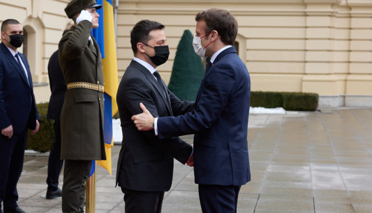
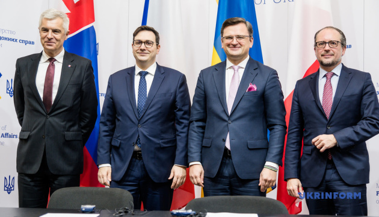
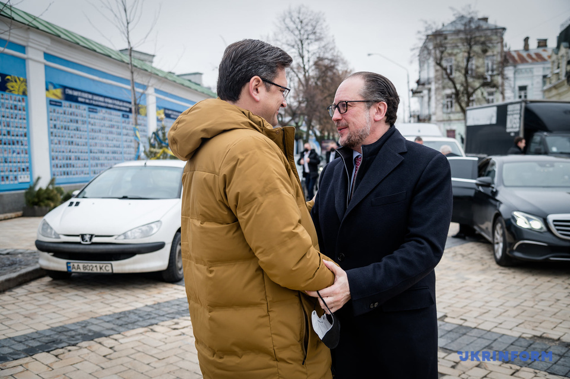
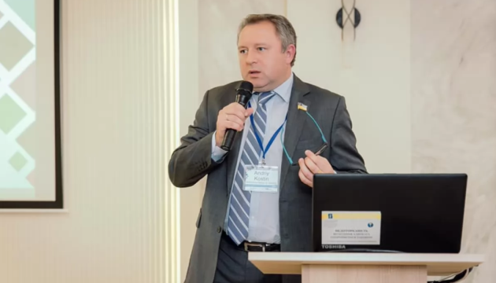
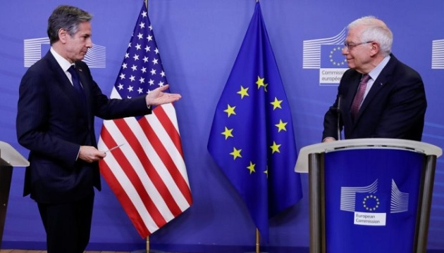
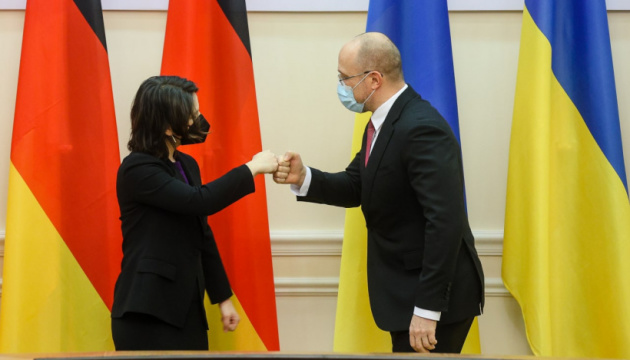

Зеленський зустрів Макрона у Маріїнському палаці
Президент України Володимир Зеленський зустрів Президента Французької Республіки Еммануеля Макрона у Києві. Глава Української держави привітав французького колегу на порозі Маріїнського палацу.
Розпочалися переговори глав держав. Планується, що після цієї зустрічі два президенти поспілкуються з представниками ЗМІ.
Як повідомляв Укрінформ, Президент Франції Еммануель Макрон у понеділок вилетів до Москви, аби провести перемовини з Володимиром Путіним щодо відведення російських військ від кордонів України. На спільній пресконференції з президентом РФ він заявив, що мета його візиту до Москви - безпека всіх.
Він також зазначив, що базою вирішення “українського питання” є Мінські угоди, і що саме про це він буде говорити з Президентом України Володимиром Зеленським на зустрічі у Києві.
Джерело: Укрінформ
Глава МЗС Чехії: Ультиматуми Росії – не спосіб ведення переговорів
Країни Славковського формату – Австрія, Чехія і Словаччина – твердо стоять на боці України, і візит голів МЗС цих держав в Україну має чітко це засвідчити.
Про це розповіла заступниця голови парламентської фракції "Слуга народу", заступниця голови Комітету ВР з питань гуманітарної та інформполітики, народний депутат Євгенія Кравчук.
Так, за її словами, є лише два дискусійних питання, які призупинили ухвалення проєкту закону. Зокрема, йдеться про регулювання Інтернет-ЗМІ. "Зараз усі з телебачення переходять на Інтернет-платформи чи платформи спільного доступу, а це ніяк не регулюється. Дуже багато ОТТ-платформ російські. Вони заходять на український ринок. Ми тут розповідаємо про квоти, а вони там "шарашать" російські серіали і люди можуть купувати їх навіть за акційними цінами. Це оновлення обов’язково відбудеться", – зауважила Кравчук.
Вона уточнила, що в разі ухвалення законопроєкту відповідним регулювання займатиметься Національна рада України з питань телебачення і радіомовлення. "Ми хочемо, щоб регулятор був один, бо типи порушень однакові і для телевізійних каналів, і для інтернету, але рівні відповідальності і ризиків різні", – наголосила парламентарій.
Депутат пояснила, що реєстрація Інтернет-ресурсу буде необов‘язковою, а добровільною. Однак Кравчук підкреслила, що представник зареєстрованого ресурсу вважатиметься журналістом, а його діяльність захищатиметься відповідними законами.
Другим дискусійним питанням політик назвала заяви великих телевізійних холдингів про ймовірне перевищення повноважень регулятора. "Вони вважають, що буде якийсь терор, цензура. Насправді, якщо розглядати більш детально ці норми, багато з них уже є в законодавстві, але потребують удосконалення", – додала вона.
Кравчук поінформувала, що консультації щодо законопроєкту відбуваються постійно, але не змогла спрогнозувати, коли документ може бути ухвалено. За її словами, цей законопроєкт є одним "із найскладніших для того, щоб проголосувати його навіть за це скликання".
Як повідомлялося, у липні 2020 року в парламенті зареєстрували доопрацьований законопроєкт про медіа. Однак через хвилю критики та відсутність цілковитої підтримки його не виносили на голосування.
Джерело: Укрінформ
Росія з 2015 року зробила багато того, що суперечить Мінським угодам – Костін
Росія за час, що минув після підписання Мінських угод у 2015 році, зробила багато такого, що їм суперечить, і це ускладнює розробку дорожньої карти їх виконання.
Про це заявив в.о. першого заступника голови української делегації в ТКГ Андрій Костін в інтерв'ю РБК-Україна, повідомляє Укрінформ.
Він нагадав, що ідея розробити дорожню карту виконання Мінських угод з’явилася на рівні нормандського формату ще в 2016 році. Вона передбачала певну черговість покрокового виконання тих чи інших елементів Мінських домовленостей. Ця робота в нормандському форматі відновилася вже після 2019 року, і з'явився термін "кластери".
"Відповідний документ як і раніше знаходиться в роботі на рівні політичних радників нормандського формату. Кластери якраз і представляють набір таких дій, які повинні або виконуватися одночасно, або одна повинна слідувати за іншою", - сказав Костін.
Як повідомлялося, на зустрічі політичних радників нормандського формату в Парижі 26 січня було домовлено провести наступну зустріч через два тижні. Така зустріч планується, за даними Укрінформу, на 10 лютого.
Джерело: Укрінформ
США і Європа готові реагувати на агресію РФ швидко й потужно – Блінкен
США разом із європейськими союзниками та партнерами віддають перевагу дипломатичному підходу у врегулюванні розбіжностей з Росією, однак у разі посилення агресії з боку Москви готові до «швидкої та потужної» відповіді у вигляді санкцій.
Про це заявив у понеділок держсекретар США Ентоні Блінкен під час пресконференції у Вашингтоні спільно з високим представником ЄС Жозепом Боррелем, передає власний кореспондент Укрінформу.
«Ми твердо віримо разом, Сполучені Штати і Європа, що кращим та відповідальним курсом є опрацювання розбіжностей, які ми маємо, в рамках дипломатії, шляхом діалогу. І ми продемонстрували нашу відданість цьому»,- зауважив глава Держдепартаменту США.
Середній курс купівлі 10 російських рублів упав на 2,9 коп. та становить 3,257 грн. Середній курс продажу знизився на 1,7 коп. – до 3751 грн. Мінімальний курс готівкової покупки, пропонований банками, – 2 грн за 10 російських рублів, максимальний – 3,55 грн. Для продажу мінімальний курс – 3,65 грн, максимальний – 3,9 грн.
Арахамія уточнив, що для участі в закритих зустрічах необхідно мати доступ до державної таємниці. Він висловив сподівання, що колеги по парламенту отримають цей доступ, написавши відповідну заяву, і матимуть можливість продуктивно працювати в такому форматі.
Як повідомлялося, перед початком пленарного засідання 25 січня відбулася закрита робоча зустріч за участі керівництва Верховної Ради, міністра оборони Олексія Резнікова та голів парламентських фракцій і груп щодо питань національної безпеки та оборони.
Джерело: Укрінформ
Шмигаль зустрівся із Бербок - про що говорили
Прем’єр-міністр України Денис Шмигаль та міністр закордонних справ Німеччини Анналена Бербок під час зустрічі в Києві обговорили теми оборони, енергетичної безпеки та економіки.
Про це повідомляє Укрінформ із посиланням на Урядовий портал.
Так, Шмигаль зауважив, що Україна максимально консолідує своїх основних міжнародних партнерів. “Ми сподіваємось на подальшу підтримку нашої держави та сильну й непохитну позицію Берліна”, — додав він.
На думку Кравчук, парламентарії, які ввійшли до ГО "Команда Разумкова", не хочуть виходити з фракції "Слуга народу", бо списочники можуть втратити мандат.
"Це просто сидіння на двох стільцях – будувати свою кар’єру в іншій політичній силі, пройшовши за списком, це навіть не мажоритарка. У випадку мажоритарки якийсь відсоток успіху залежав від людини, хоча "зелений прапор", особливо, у певних регіонах, зокрема, в Києві гарантував високий рейтинг. Якщо Роман Соха вийшов із фракції, то деякі колеги не поспішають цього робити, бо не хочуть втрачати мандат депутата. Ми обов’язково це обговоримо", – зазначила заступниця голови фракції "Слуга народу".
Як повідомлялося, Верховна Рада на пленарному засіданні 7 жовтня 2021 року відкликала Дмитра Разумкова з посади Голови Верховної Ради. На відповідну посаду 8 жовтня призначено колишнього першого заступника Голови ВР Руслана Стефанчука.
Пізніше Разумков оголосив, що створює міжфракційне об'єднання "Розумна політика".
У грудні минулого року Міністерство юстиції України зареєструвало громадську організацію "Команда Разумкова". У керівництві організації народні депутати із парламентської фракції "Слуга народу" Василь Мокан і Неллі Яковлєва. Обласні осередки також очолили деякі парламентарії з "СН".
Джерело: Укрінформ